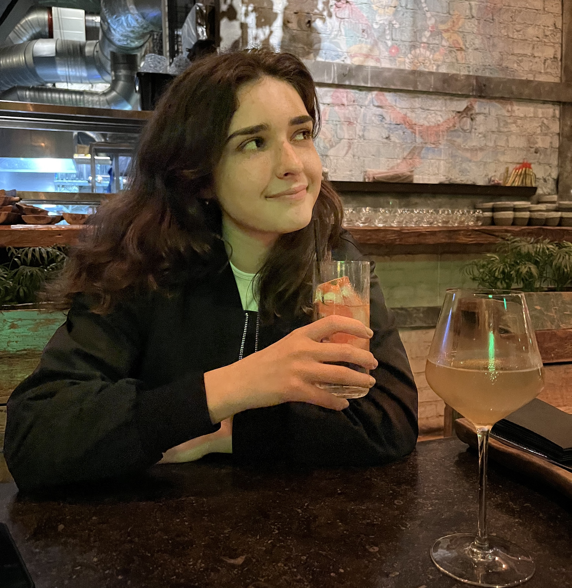
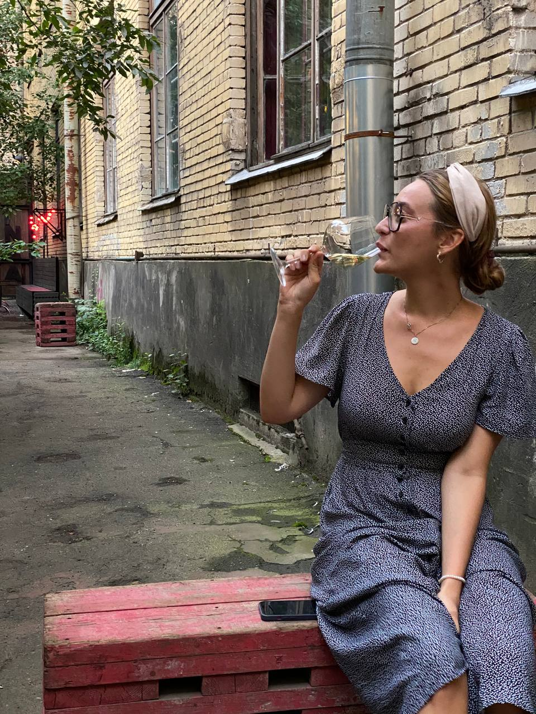
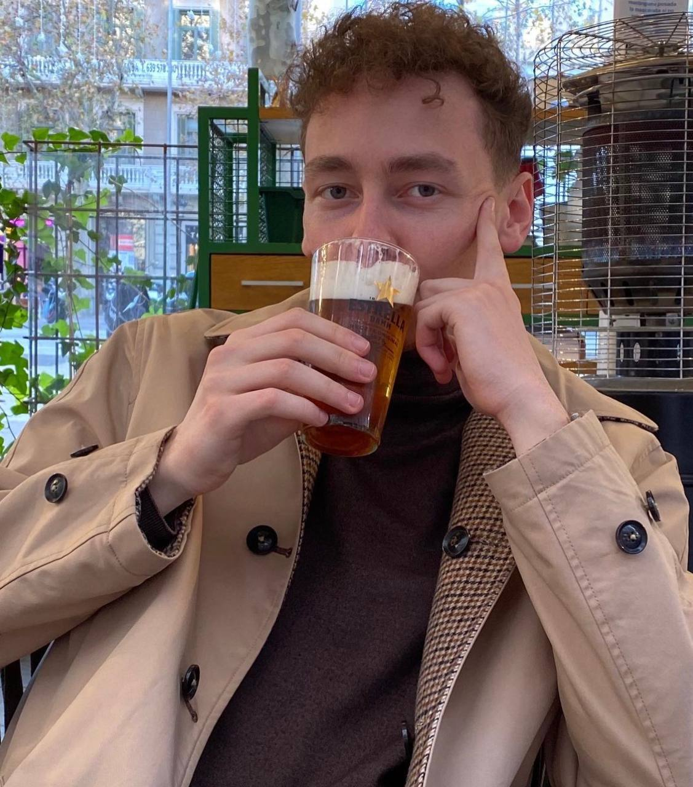

Meine Route
Проект про людей, бары и культуру Петерубрга.

что будете пить сегодня?
Что за проект?
Мы хотим рассказать про Петербург, но не говоря про город. Мы будем говорить про барную культуру города через жителей. Нас спросили: «что такое Петербург?» мы сказали: «Это люди и бары». Так родилась эта история.
-
Аня Евтодиева
Студентка, 23 год, живет в Санкт-Петербурге 3 года
Поход в бары для меня всегда был сложной историей, потому что по своей натуре я очень скромный и стеснительный человек. Но после парочки коктелей все меняется.
Очень советую выпить парочку коктелей виски с содой, после которых я танцевала до 5 утра на набережной севкабеля.
Мои самые любимые бары это утопист, и еще другие названия которых я забыла но потом обязательно напишу.
-
Арина Никифорова
Студентка, 23 года, живет в Санкт-Петербурге всю жизнь
В прошлое воскресенье я была в баре Mapuche на Некрасова. Там я в первый раз танцевала бачату! Лилась лимончелла. Мне нужно было на работу вставать в 7 утра, но тут принесли негрони. Это оказался любимым напитком бармена!
Дальше произошла очень интересная история про которую я не могу пока рассказать, потому что надо спросить у Арины.
-
Глеб Шипачев
Студент, 23 года, живет в Петербурге наверное всю жизнь (надо спросить)
Ой такая история конечно со мной произошла. Были мы как то с моими подругами на уроке по керамической лепке. Одна из моих подруг купила там вазу, потому что мы лепили тарелки и они долго готовились. Так вот взяли мы эту вазу и понесли ее в бар. Ну а там [цензура]
Хотите чтобы наши рассказчики составили вам компанию в баре?
Мы сделали бота, который поможет вам развлечься в баре, даж если вы пришли туда одни. Например, ты пришел в Севкабель! И куда мне идти? Ты тыкаешь на кнопку в телеграм-боте «Я рядом». И он выдает тебе варианты поблизости. Вот ты уже заходишь в бар. Нажимаешь кнопку «Я здесь». Тебя просят достать наушники. В этот момент ты погружаешься в историю. «Привет! Меня зовут Дима. Советую тебе взять Маргариту, она здесь особенная. Хочешь, расскажу историю, которая произошла со мной, когда я пил здесь Маргариту?»